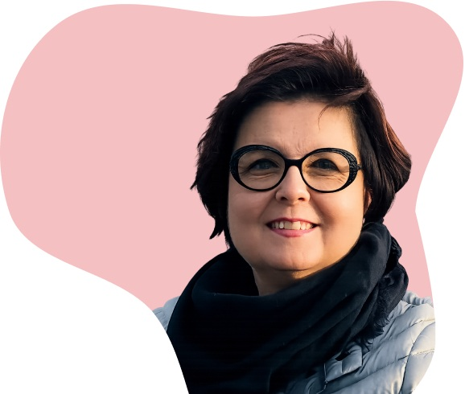
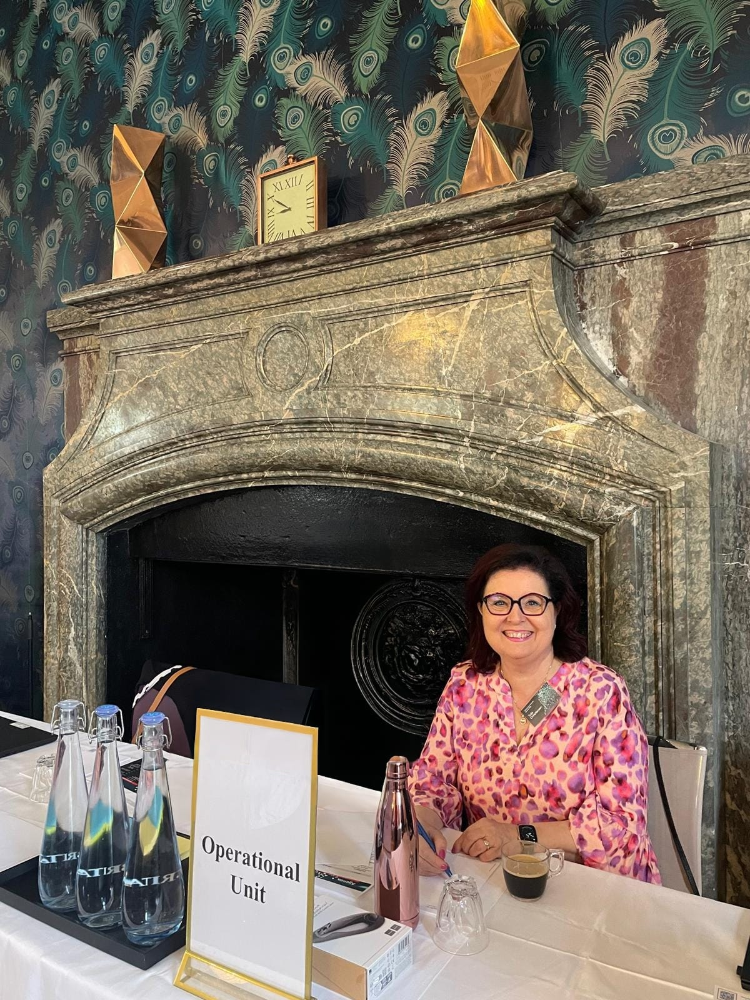

Minusta
Ratkaisukeskeinen Executive Assistant. 40+ vuoden kokemus ylimmän johdon arjesta Suomessa ja kansainvälisesti. Tuon projektiisi varmuuden, laadun ja nopean etenemisen.

Vahvuudet
- Erinomainen organisointikyky
- Laaja globaali verkosto
- Myynnin ja markkinoinnin käytännön toteutus
- Tapahtuma- ja kokousjärjestelyt end-to-end
- Monikielinen työskentely FI · SV · NO · DE · EN
Lyhyt tarina
Olen toiminut johdon assistenttina yli 40 vuotta ja tukenut ylimmän johdon arkea kansainvälisesti. Olen ratkaisukeskeinen, erittäin järjestelmällinen ja tottunut toimimaan paineen alla. Tulokset puhuvat puolestaan.
